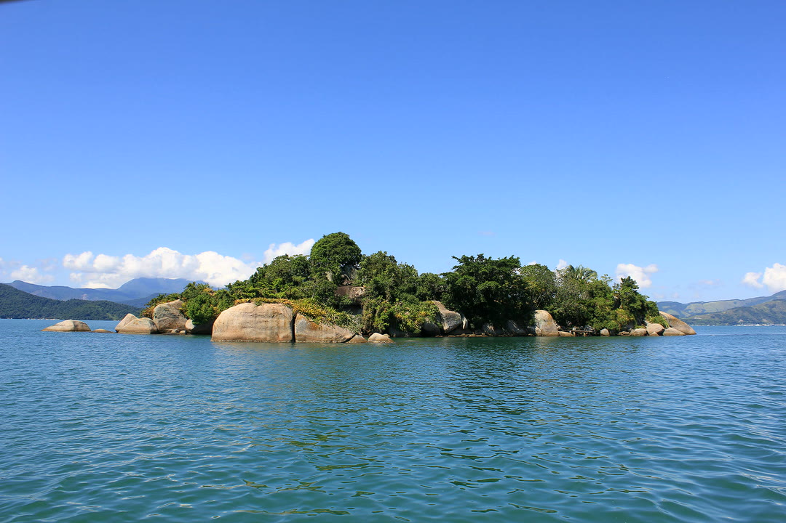
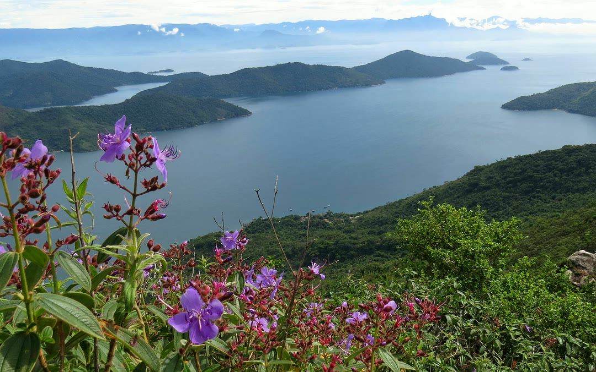
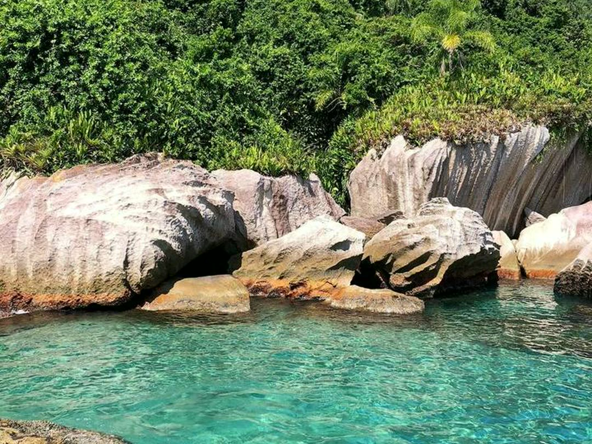

Venha passear em Paraty a bordo da lancha Mikhael.
Praias e ilhas maravilhosas em 5 horas de passeio, com roteiros exclusivos.

Conforto do cais até a ilha.


Tudo isso a bordo.
- Cooler 26 litros com gelo
- Água à vontade
- Ducha de água doce
- Som bluetooth
- Flutuantes (macarrão)
- Máscara e snorkel
- Coletes salva-vidas
- Incluso no passeioÉ só trazer a turma.
Escolha sua ilha.
4 roteiros saindo do Cais de Turismo. As paradas também podem ser combinadas.

Roteiro Norte
Ilhas e praias do lado norte da baía.
- 1Ilha Malvão
- 2Ilha Comprida do Norte
- 3Praia Salvador Moreira
- 4Ilha Ventura
Roteiro Sul I
Começa pela Praia da Lula.
- 1Praia da Lula
- 2Ilha da Pescaria
- 3Praia Vermelha
- 4Ilha do Mantimento

Roteiro Sul II
Ilha dos Cocos e Saco da Velha.
- 1Ilha dos Cocos
- 2Enseada da Preguiça
- 3Praia Saco da Velha
- 4Ilha da Pescaria

Roteiro Sul III
Com parada na Lagoa Azul.
- 1Ilha dos Cocos
- 2Saco da Velha
- 3Lagoa Azul
- 4Praia Vermelha
Monte seu passeio.
Escolha, confira a mensagem e envie no WhatsApp.
Cais de Turismo de Paraty

- OndeCais de Turismo · Centro Histórico, Paraty - RJ
- ReservasWhatsApp (11) 95760-2301 · Haroldo
Quanto tempo dura?
5 horas de passeio, com cerca de 40 minutos em cada parada.
De onde sai?
Do Cais de Turismo de Paraty, no Centro Histórico.
Dá para almoçar no caminho?
Sim. Tem opção de parada em restaurante para almoço ou porções.
Posso escolher as paradas?
Pode. Além dos 4 roteiros, o roteiro e as paradas podem ser combinados.
Como funciona a reserva?
50% no Pix para garantir a data e o restante no embarque.
O que tem a bordo?
Cooler 26 L com gelo, água, ducha de água doce, som bluetooth, flutuantes, máscara e snorkel e coletes salva-vidas.